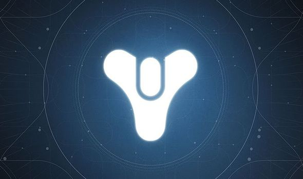

Destiny Mini-Game: By Kevin Mitchell
Click Image to Start
Objective:
Guardian, Oryx is wreaking havoc all over the Destiny universe. Track him down and destroy anybody and anything in your way!
How to Play:
- First, you will make your character. Each class has different abilities called "Supers".
- During battles, you will use the Attack button to attack enemies. You can use your Super once per battle to utilize your unique Guardian Ability.
- After each battle, follow the instructions presented to you or browse through the shop!
- Oh, lastly, survive!